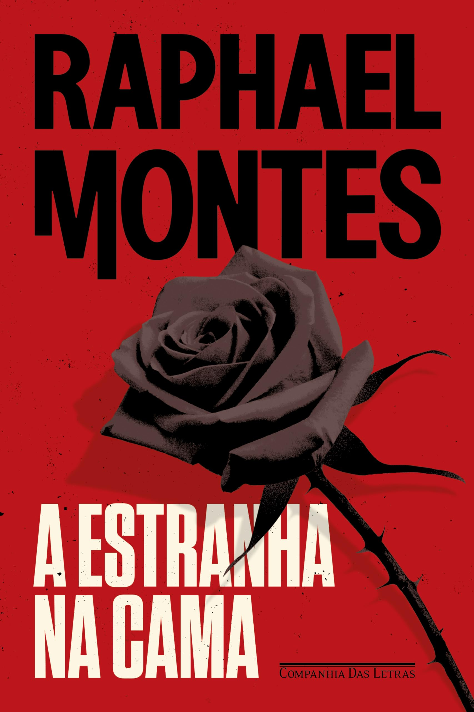

A Estranha na Cama
Raphael Montes
Todo livro esconde um segredo...
CLUBE LITERÁRIO DE SUSPENSE
Entre páginas, mistérios e teorias, encontramos pessoas que compartilham a mesma paixão: histórias que nos surpreendem.
MAIS DO QUE UM CLUBE, UMA INVESTIGAÇÃO
O Clube da Reviravolta nasceu da paixão por suspense, mistérios e histórias que permanecem conosco mesmo depois da última página.
Aqui, cada leitura é um convite para desconfiar, investigar, criar teorias e compartilhar descobertas. Reunimos leitores que amam o inesperado e que sabem que, às vezes, a melhor parte de uma história é aquilo que nunca imaginamos.
Afinal, todo bom mistério merece ser discutido.
NOSSO UNIVERSO LITERÁRIO
Histórias que desafiam nossas certezas e deixam perguntas mesmo depois da última página.

Raphael Montes
Raphael Montes
Nossos encontros são momentos de conversa, descobertas, teorias e muitas reviravoltas.
O PRÓXIMO ENCONTRO SE APROXIMA
Prepare-se para nossa próxima investigação literária.
✦ · ✦ · ✦